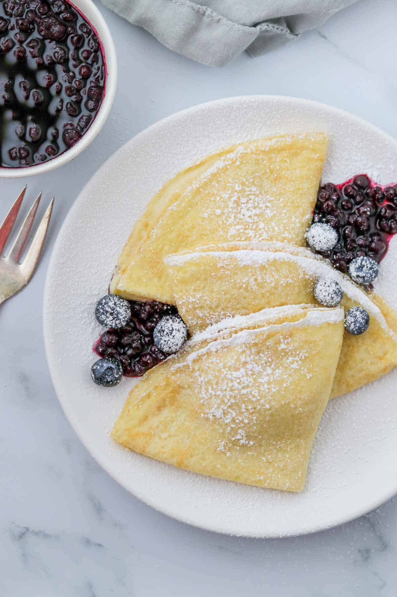
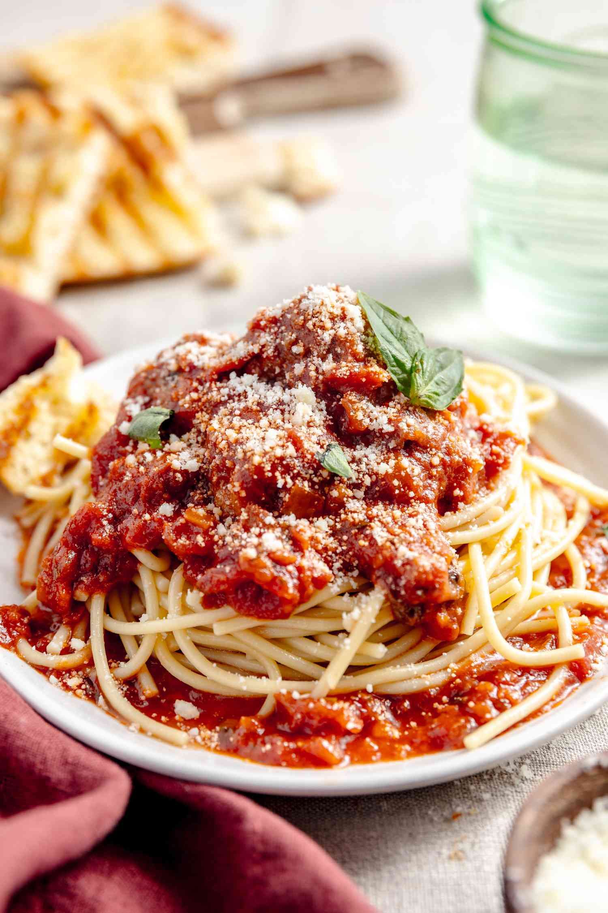

Skip to Main Content
Recipes
Swedish Pancakes
Origin: Sweden
Category: Breakfast

- Butter
- Sugar
- Eggs
- Vanilla
- Milk
- Water
- Salt
- Flour
- Combine all ingredients in a blender and blend until completely smooth.Transfer to the refrigerator to rest for at least 2 hours or up to 2 days.
- Preheat the oven to 200 degrees if you plan to eat the pannkakor right away. Heat a 10 inch nonstick skillet over medium heat. Stir the batter briefly to recombine. Brush skillet with melted butter. Pick the skillet up off of the burner and quickly add ¼ cup of batter. Immediately begin swirling the batter around the skillet so that it coats the bottom of the pan. Continue swirling until the batter is just set. Return skillet to the burner. Cook until the pancake is golden brown in spots on the bottom, about 30 seconds. Use a thin spatula to loosen the pancake, flip it over continue to cook on the other side for about 30 seconds. Transfer to a plate. Cover with foil and transfer to oven to keep warm and repeat with remaining batter, wiping out skillet in between pancakes with paper towel as needed.
- Serve with lingonberry jam and butter (see note below) or other desired toppings and/or fillings. See notes below for more information about making ahead of time and storing in the refrigerator or freezer.
Spaghetti
Origin: Italy
Category: Main Dish

- Dry spaghetti noodles
- Pasta Sauce
- Cheese
- etc.
- In a pan, add the pasta sauce and just enough water to cover the bottom of the pan. Bring the mixture to a boil.
- Add the spaghetti noodles to the pan and cook according to the packaging instructionss
- Drain noodles
- Add sauce
- Add cheese
- Enjoy!
Chinese Hot and Sour Soup
Origin: China
Category: Soup

- Tofu
- Mushrooms
- Water
- Pork
- Bamboo shoots
- Water
- Soy sauce
- Boil
- Simmer
- Cooking
- Dipping sauces